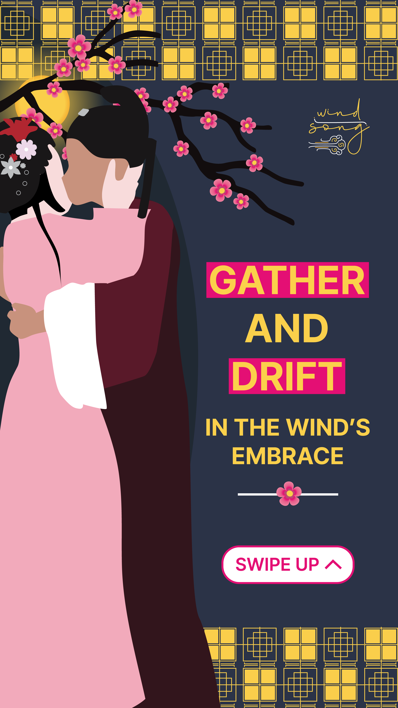
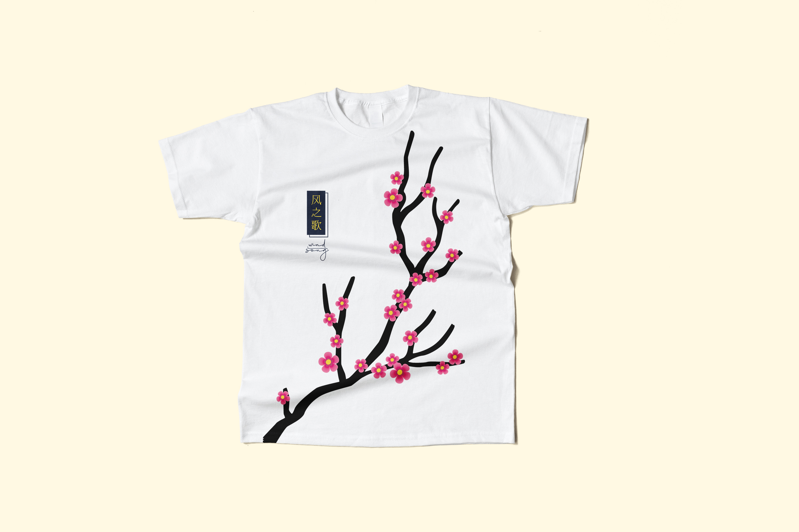
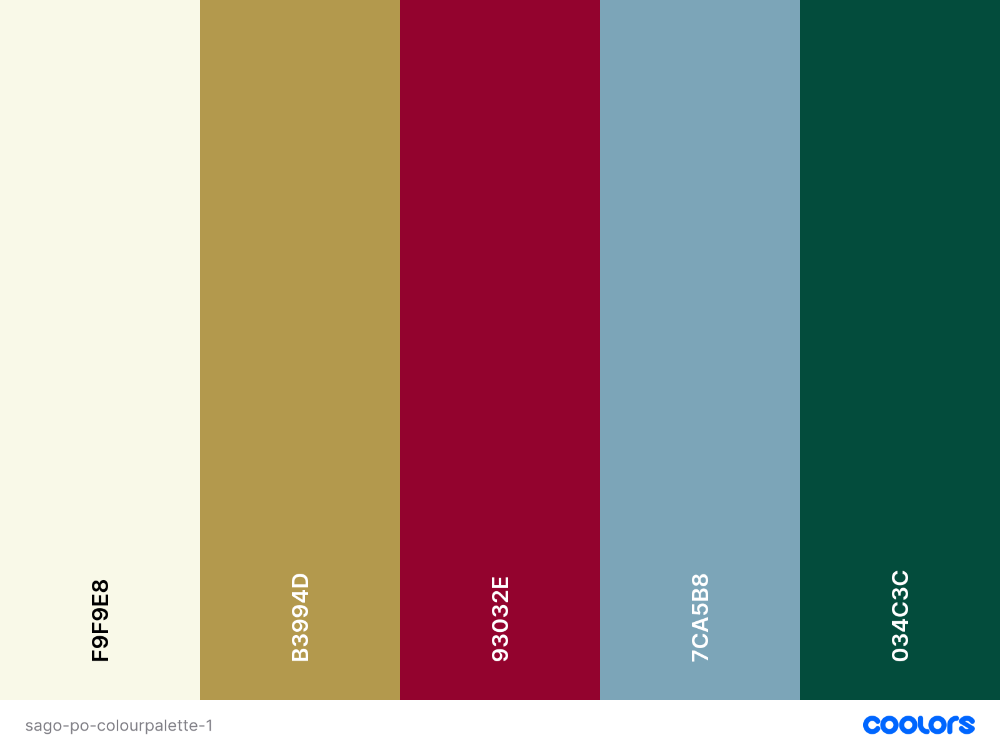
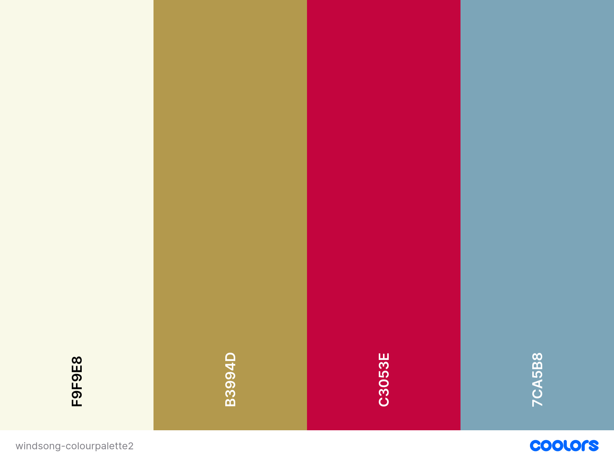
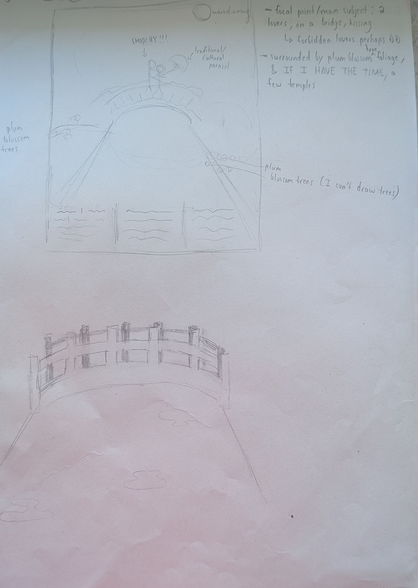

This academic assignment involved creating a cohesive visual identity for a fictional music festival for a particular music genre. Windsong is a hypothetical opera festival held in Taipei, Taiwan, and follows the tales of forbidden lovers who love is cradled, carried and delivered by the wind.
The intent was to blend Chinese/Taiwanese aesthetics with contemporary minimalism to create cultural/folk, modern/elegant visuals. To fulfill the cultural/folk visuals, I initially planned to incorporate:
To fulfill the modern/elegant visuals, I initially planned to pair gold with red and/or blue, and pair a script font with a serif or sans-serif font, using thin lines will reinforce this further.




